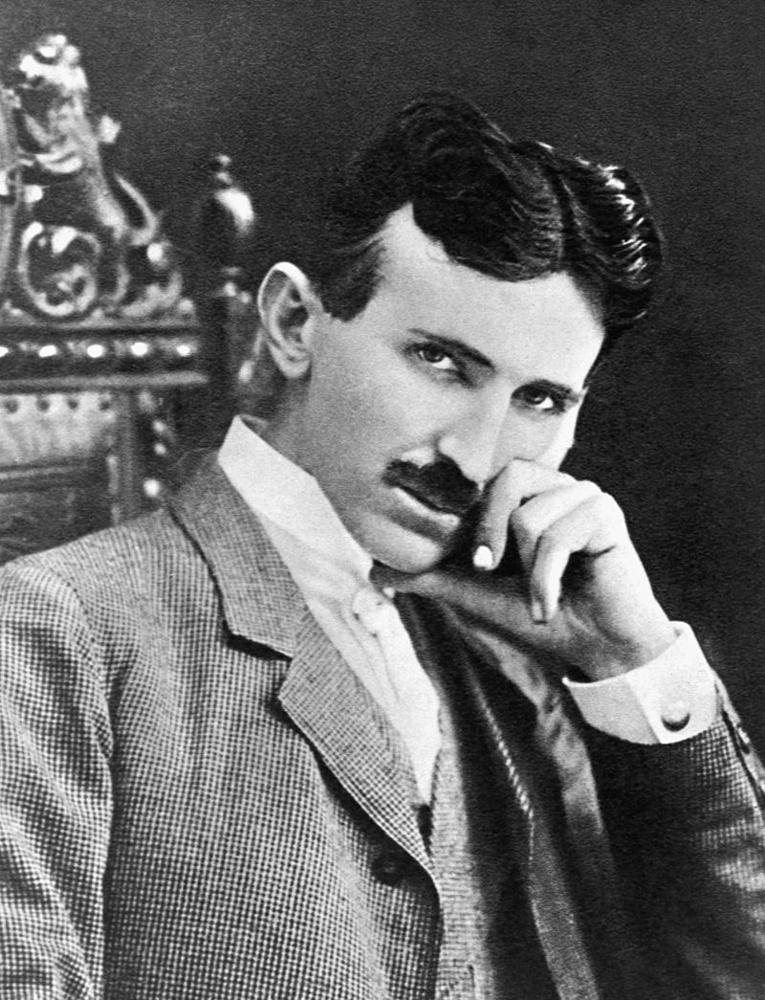

 Nikola Tesla(10 July 1856 - 7 January 1943) was Serbian-American inventor,electrical engineer,physicist and futuriust who is best known for his contributions to the design of the modern alternating current(AC) electricity supply system
Born and raised in Austrian Empire ,Tesla recived an Advanced education in engineering and physics in the 1870s gained practical experience in the early 1880s working in telephony at Continetal Edison in the new electric power industry .He emigrated to the United States where he would become nauralizied citizen.He worked for short time at the Edison Machine works in New york City before he struck on his own.With the help of partners to finance and market his ideas,Tesla set up laboratories and companies in New York to develop range of electrical and mechanical devices.His alternating current(AC) introduction motor and related polyphase AC patents licesned by Westigohouse Electric in 1888,earnd considerable amount of money and became conerstone of the polyphase system which that company would eventually market
Attempting to develop inventions he could could pantent and market ,Tesla conducted a range of exišerimnets with mechanical oscillators/generators, electric discharge tubes and early X-ray imaging.He also bulit wireless-controlled boat ,one of the first ever exhibited.Tesla became welll known as an inventor and would demonstrate his achivements to celebrities and wealthy patrons at his lab and was noted for his showmanship at public lectures.Throught the 1890s.Tesla purused his ideas for wireless lighting and worldwide wireless electric power distribution in his high voltage,high high-frequency power experiments In New York and Colorado Springs.In 1893 he made pronouncements on the possibility of wireless communication with his devices.Tesla tried to put htese ideas to practical use in his unfinished Wardenclyfe Tower project,an intercontinental wireless communication and power transimiter,but ran out of funding before he colud complete it.
After Wardenclyfe,Tesla went on to try to develop a series of inovations in 1910s and 1920s.varying degrees of success.Having spent most of his money he lived in a series of New York Hotels,leaving behind unpaid bills.Tesla died in New york in January 1943.His work fell into realtive obscurity folowing his death,but in 1960,the General Conference on Weights and Measures named si unit of magnetic flux destiny the tesla in his honor.There has been reseguence in popular interest in Tesla since the 1990s.